長期トレンド
JKMとJEPXシステムプライスの推移グラフ
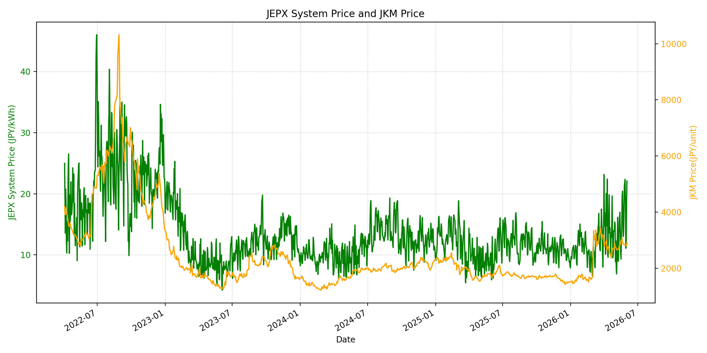
WTIの推移グラフ
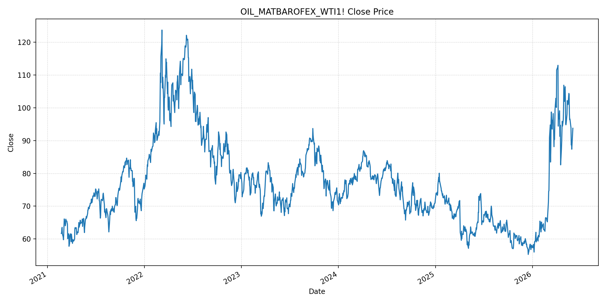
JEPXエリアプライスグラフ（直近一年分）
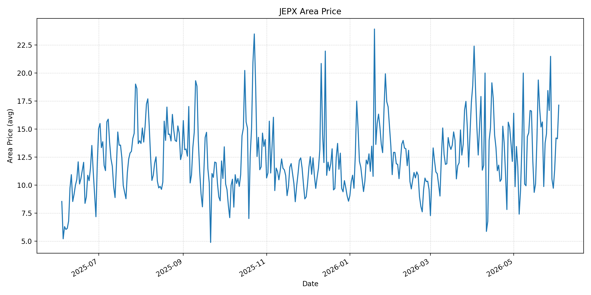
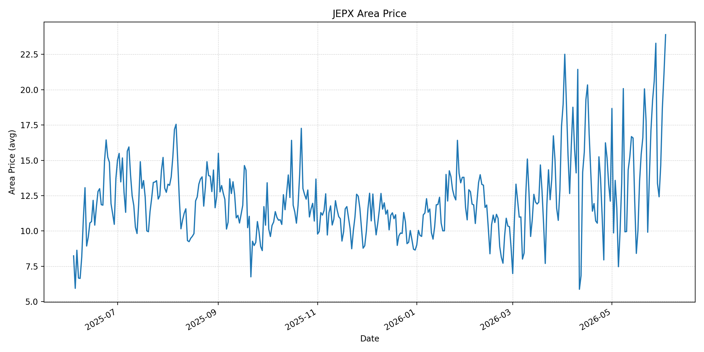
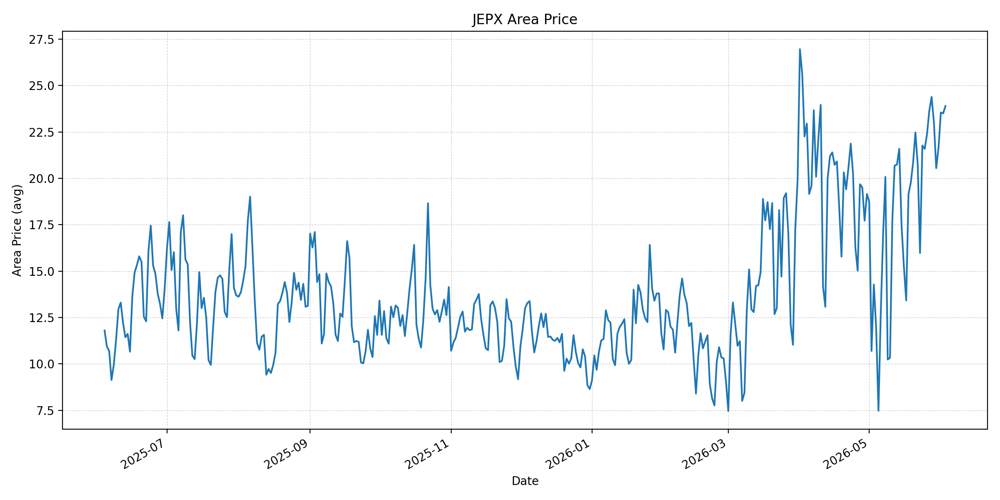
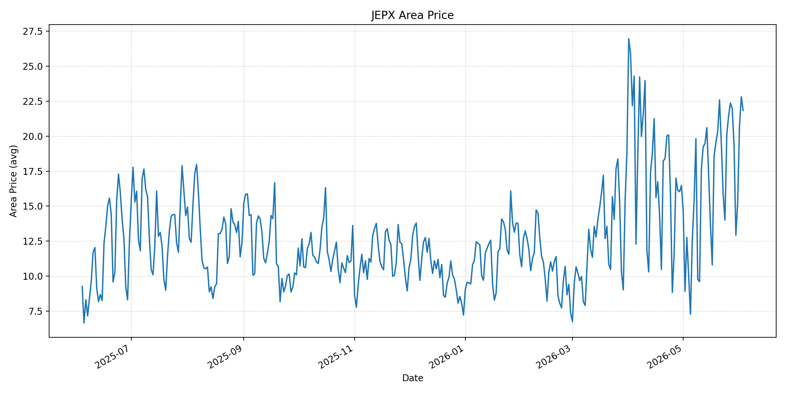
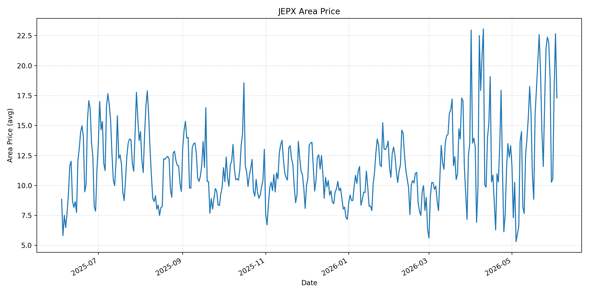
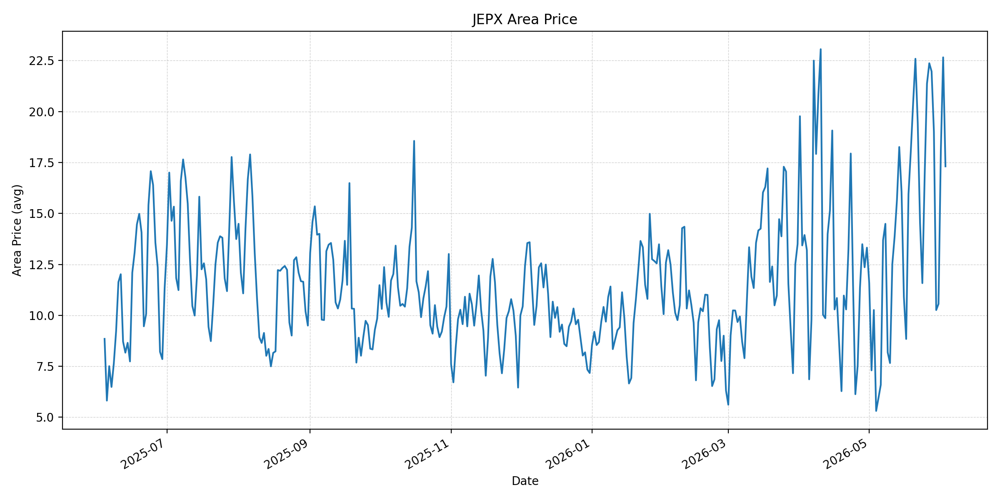
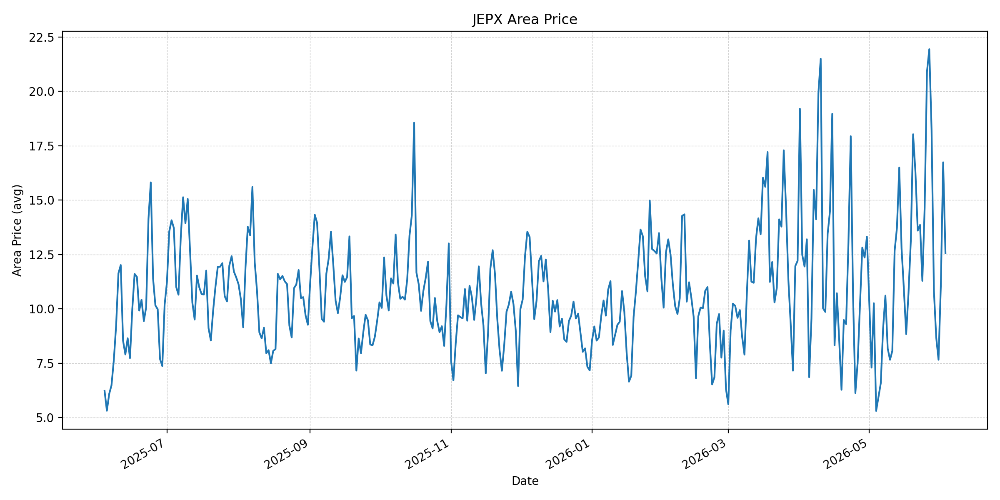
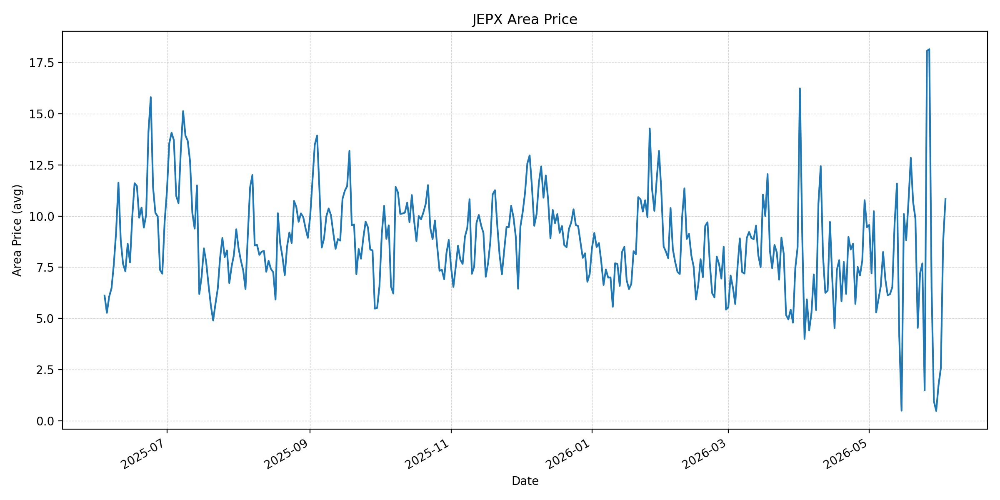
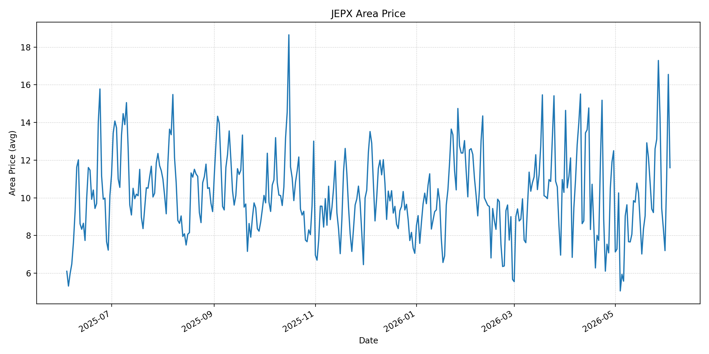
短期トレンド
JKMとJEPXシステムプライスの推移グラフ
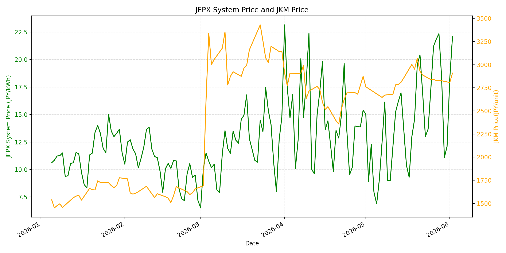
WTIの推移グラフ
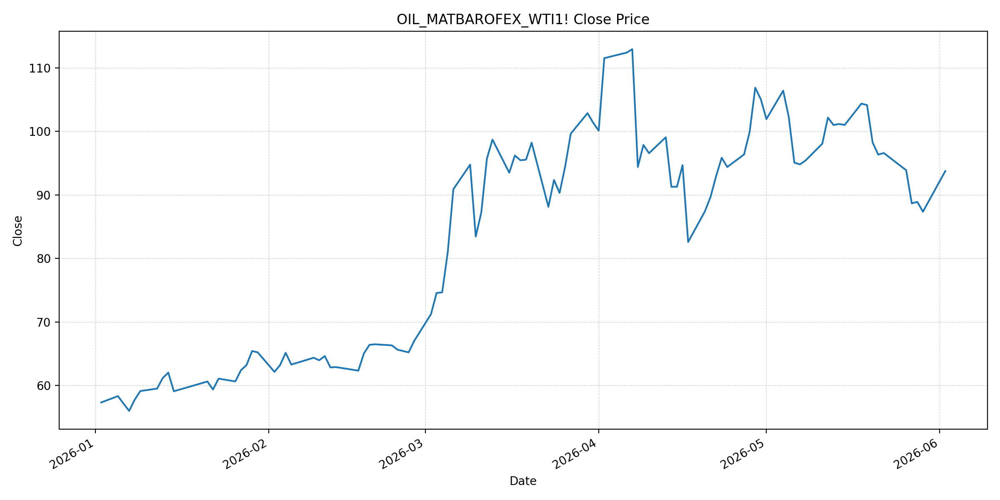
JEPXシステムプライス
JEPXは受渡日ベースの最新非空値で評価しています。最新値は 2026-06-03 分です。先週終値は 2026-05-27 時点の直近値、先月終値は 2026-05-31 時点の直近値で評価しています。
| エリア | 当日価格 | 前日価格 | 前日比（％） | 先週終値 | 先週比（％） | 先月終値 | 先月比（％） | 過去最高値 | 最高値比（％） |
|---|---|---|---|---|---|---|---|---|---|
| システム | 21.40 | 22.08 | -3.08 | 21.84 | -2.01 | 12.10 | 76.86 | 64.06 | -66.60 |
| 北海道 | 17.13 | 14.13 | 21.23 | 16.65 | 2.88 | 11.38 | 50.53 | 73.92 | -76.83 |
| 東北 | 23.90 | 21.12 | 13.16 | 20.61 | 15.96 | 14.64 | 63.25 | 84.92 | -71.85 |
| 東京 | 23.90 | 23.50 | 1.70 | 23.64 | 1.10 | 21.65 | 10.39 | 86.13 | -72.25 |
| 中部 | 21.84 | 22.81 | -4.25 | 22.37 | -2.37 | 15.25 | 43.21 | 52.06 | -58.05 |
| 北陸 | 17.31 | 22.66 | -23.61 | 22.37 | -22.62 | 10.56 | 63.92 | 46.48 | -62.76 |
| 関西 | 17.31 | 22.66 | -23.61 | 22.37 | -22.62 | 10.56 | 63.92 | 46.48 | -62.76 |
| 中国 | 12.56 | 16.74 | -24.97 | 21.94 | -42.75 | 7.66 | 63.97 | 46.48 | -72.98 |
| 四国 | 10.83 | 8.76 | 23.63 | 18.16 | -40.36 | 1.74 | 522.41 | 46.48 | -76.70 |
| 九州 | 11.60 | 16.55 | -29.91 | 17.29 | -32.91 | 7.20 | 61.11 | 40.54 | -71.39 |
LNG先物価格
最新値は 2026-06-02 の LNG(close) です。先週終値は 2026-05-26 時点の直近値、先月終値は 2026-05-29 時点の直近値で評価しています。
| 当日価格 | 前日価格 | 前日比（％） | 先週終値 | 先週比（％） | 先月終値 | 先月比（％） | 過去最高値 | 最高値比（％） |
|---|---|---|---|---|---|---|---|---|
| 2909.00 | 2807.00 | 3.63 | 2842.00 | 2.36 | 2826.00 | 2.94 | 10319.00 | -71.81 |
石油先物価格
最新値は 2026-06-02 の OIL(close) です。先週終値は 2026-05-26 時点の直近値、先月終値は 2026-05-29 時点の直近値で評価しています。
| 当日価格 | 前日価格 | 前日比（％） | 先週終値 | 先週比（％） | 先月終値 | 先月比（％） | 過去最高値 | 最高値比（％） |
|---|---|---|---|---|---|---|---|---|
| 93.76 | 92.16 | 1.74 | 93.89 | -0.14 | 87.36 | 7.33 | 123.70 | -24.20 |
ニュース
イラン情勢に関するニュース
- 2026年6月2日、APは、イランの半国営通信が停戦延長をめぐる仲介者との連絡停止を報じた一方、トランプ大統領はこれを否定し協議継続を主張したと報じました。イラン側はレバノン停戦の履行を協議継続条件にしているとされています。 参照: AP, 2026-06-02
- 2026年6月2日、Reutersは、イランが米国との戦争停止案を検討中で、最終案にはまだ回答していないと報じました。トランプ大統領は停戦延長とホルムズ海峡再開の合意が来週にも可能との見方を示しています。 参照: Reuters/Investing.com, 2026-06-02
ホルムズ海峡経由の石油・LNGに関するニュース
- 2026年6月2日、Reutersは、ホルムズ海峡がなお大きく制限され、過去24時間に革命防衛隊海軍の許可を得た24隻が通航したと報じました。海峡は従来、世界の石油・LNG供給の約5分の1を担っており、通航正常化は未確認です。 参照: Reuters/Investing.com, 2026-06-02
- 2026年6月2日、APは、イランがホルムズ海峡への締め付けを維持し、米国もイラン港湾封鎖を強めていると報じました。別記事では米軍がイラン港へ向かうタンカーを止めたとも報じられており、海上物流リスクは残っています。 参照: AP, 2026-06-02
ホルムズ海峡経由でない石油・LNGに関するニュース
- 過去24時間で、日本向けの非ホルムズ新規大型調達に関する強い追加報道は確認できませんでした。直近では2026年5月27日、S&P GlobalがJERAは豪州Ichthys LNGのストライキリスクを吸収可能と見ていると報じています。 参照: S&P Global, 2026-05-27
- JOGMECの2026年5月LNG月次では、米イラン和平交渉進展への期待でJKMが下落した一方、ホルムズ封鎖継続や豪州Ichthys LNGのストライキ懸念が月後半の上昇要因になったと整理されています。 参照: JOGMEC, 2026年5月LNG月次
日本国内のイラン戦争に関係するニュース
- 過去24時間で、JEPX制度や国内電力市場制度を直接変更する新規の強い発表は確認できませんでした。直近の国内対策として、経済産業省は2026年5月26日に、7月から9月の電気・ガス料金支援と夏季省エネ呼びかけを説明しています。 参照: 経済産業省, 2026-05-26
- 経済産業省は、現時点では原油やLNGの量は確保できており、従来以上に踏み込んだ節約を求める段階ではないと説明しています。国内料金支援は家計負担を抑えますが、JEPX卸価格を直接下げる施策ではありません。 参照: 経済産業省, 2026-05-26
インサイト
ニュース事項による日本の電力市場への影響（短期：数日〜1週間）
- JEPXシステムプライスは 21.40 円/kWhで前日比 -3.08% と小幅低下しましたが、先月比は 76.86% と高い水準です。停戦協議は継続しているものの、ホルムズ通航制限と港湾封鎖が残り、燃料リスクは消えていません。
- LNGは 2909.00 と前日比 3.63%、OILは 93.76 と前日比 1.74% です。Reutersが報じた通航許可制の継続は、数日から1週間の燃料心理を下支えし、JEPXの下落余地を限定します。
- 東北・東京はともに 23.90、中部は 21.84 で高く、九州 11.60、四国 10.83 との差が残ります。短期では燃料ニュースに加え、エリア別需給と連系線制約を優先して見る必要があります。
ニュース事項による日本の電力市場への影響（長期：1ヶ月〜半年）
- 米イラン合意が成立し、ホルムズ通航が許可制から通常運用へ移れば、OILの過去最高値比 -24.20% という低位が火力燃料費の安定に寄与します。ただし、APとReutersはいずれも最終回答・履行が未確認である点を示しています。
- LNGは先月比 2.94%、先週比 2.36% と反発しました。ホルムズ依存を下げる豪州LNGは重要ですが、Ichthysの労務リスクや豪州政策リスクがあるため、非ホルムズ供給も完全な安全弁ではありません。
- 国内の電気・ガス料金支援は小売負担を抑えますが、卸市場や発電燃料調達コストを直接下げるものではありません。1ヶ月から半年では、ホルムズ正常化の実績、LNG供給の分散、東北・東京・中部の高値持続を分けて監視する必要があります。